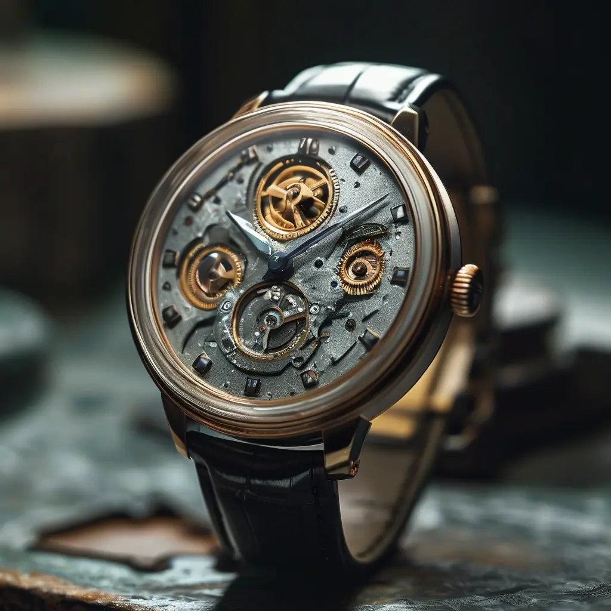
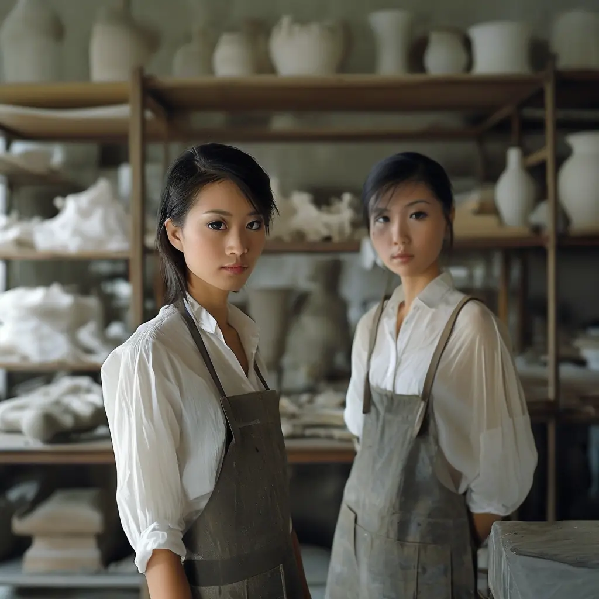
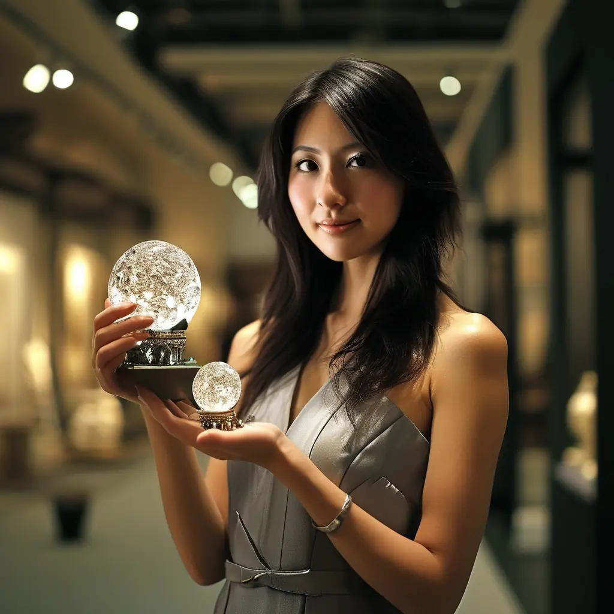
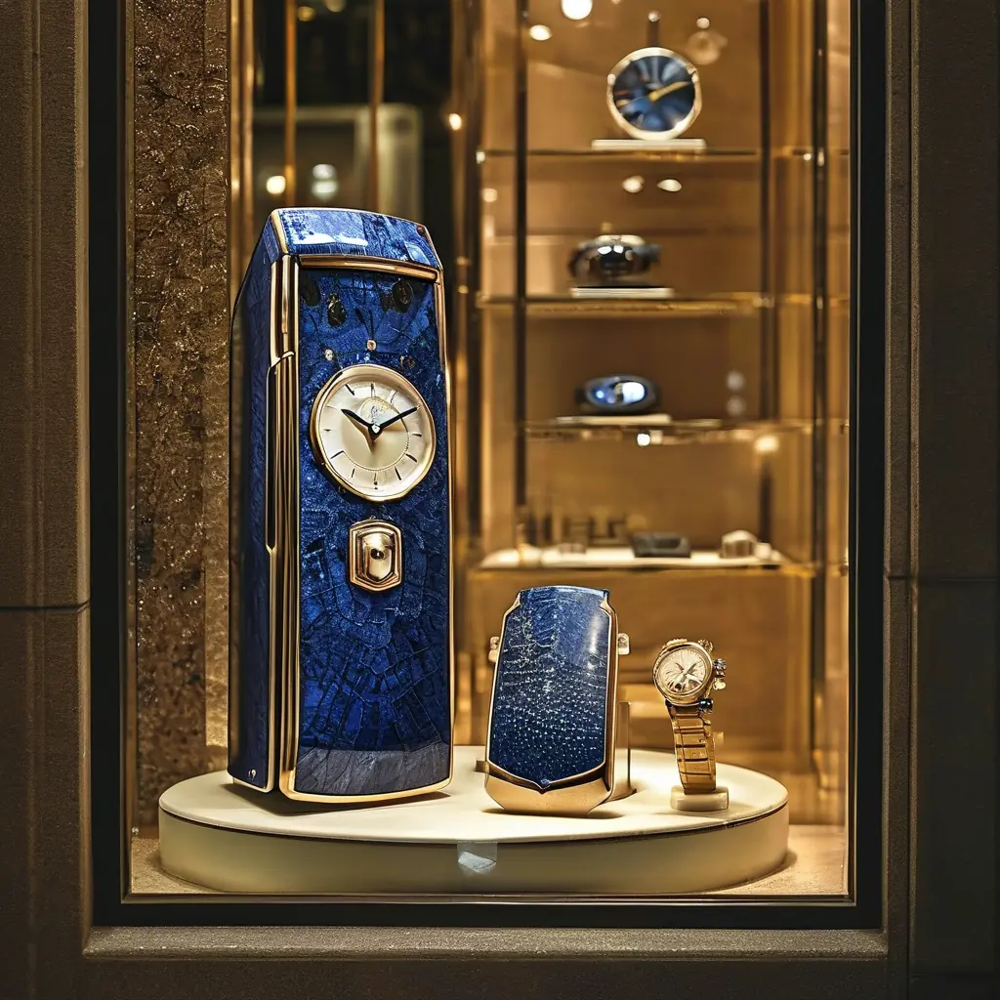

2008年10月，我公司100几号人，突然接到一个询盘。
嗰日助理小张入嚟同我講：「鄭總，有個美國客喺 inbox 落咗個查詢，問我哋個手錶手機可唔可以定制。」
我望住個 email，係英文寫嘅，措辭好直接：「Hi, I am Stephanie, a fashion designer from New York. I saw your watch phone concept. Can we discuss a custom project?」
嗰陣時做外貿，唔少客都係從阿里、環球資源、Made-in-China搵過嚟。Stephanie唔係嗰種——佢係直接從美國設計圈搵到我哋。佢講到：「I googled manufacturers of watch phones in China and your work caught my eye.」
我同小张講：「覆佢，請佢視像傾下先。」
視像嗰日，Stephanie開咗鏡頭，我同助理Echo都靜咗——鏡頭後面係一個紐約時裝設計師，金頭髮、綠眼仔，背景係曼哈頓一個studio。我哋一望就知，呢個唔係普通客。
佢用流利英文講：「I design evening gowns and cocktail dresses for runway shows. I want to extend my line into wearable technology. Your watch phone — can it be a fashion piece, not just a gadget?」
我笑住答：「可以。問題係你想點樣。」
佢講：「I want to cover it in 400 pieces of high-grade zircon. Like the luxury watches you see at Saks Fifth Avenue. But with a phone inside.」
400粒鋯石。
嗰一刻我同小张對望。嗰陣時 Apple Watch 仲未出（要等到2014至2015年先有），Samsung 嘅 Galaxy Gear 都未出（2013年）。手錶手機呢個概念本身已經好新，再加上 400粒鋯石，係完全無先例嘅事。
我諗咗五秒，然後答佢：「Stephanie，呢件事我可以做。但你要飛嚟廣州睇廠。」
佢話：「I will book the flight tomorrow.」
一個女人飛咗成日由紐約過嚟廣州
三個星期後，Stephanie真係飛咗成日，由 JFK 經東京轉機，落廣州白雲機場。
嗰日係2008年10月尾。我哋派人接機，佢一個人、兩個大行李箱，全部係衫同埋設計稿。我喺公司等佢，心入面都仲有啲忐忐——唔知佢睇完之後會唔會臨時縮沙。
佢上到公司，第一件事唔係飲茶，係要求睇廠。
我帶佢走咗三間廠：手錶機芯廠、外殼廠、組裝廠。佢每到一處都拎住個小notebook，寫低所見所問。佢問嘅問題好細：「呢個機芯係日本製定係瑞士製？」「個外殼電鍍可以維持幾耐唔甩色？」
我心諗：呢個女仔，做嘢真係好認真。
跟住佢問我：「Hany, do you think 400 zircons is feasible?」
我老實答：「Stephanie，我未做過。但如果你有耐性，我可以幫你搵到方案。問題係成本會高。」
佢話：「Money is not the issue. Quality is.」
呢句話，我記到今日。
陪佢跑勻廣州搵鋯石
嗰20幾日，我幾乎日日同Stephanie一齊。我哋第一日先解決咗表帶——Stephanie揀咗真皮 + 不鏽鋼扣，顏色要「午夜黑」。第二日係表殼，Stephanie揀咗316醫療級不鏽鋼，比一般304硬。
最難嘅係嗰400粒鋯石。
我帶佢去咗廣州番禺嗰邊幾間水晶廠、珠寶配件廠。

廠長聽到400粒，問：「係咪鑲石手錶？」
Stephanie答：「Yes, 400 pieces, set on the bezel, the lugs, the band links, and the crown. Hand-set, not glued.」
廠長話：「手鑲400粒，每粒獨立車坑道再嵌入——成本同工時都好高。」

Stephanie望住我，問：「Hany, how much for the whole project?」
我計咗一下，答：「成品如果鑲400粒AAA鋯石，每部成本大概1200蚊人民幣。包物料、手工、QC。」
佢即刻話：「I will pay 2000 RMB per unit. 600 is your margin. That fair?」
我笑：「公道。」
其實嗰600蚊嘅毛利，比普通手機仲要賺得多。我哋之前賣嘅普通手錶手機無定制款，毛利只係百幾蚊。呢張單真係大。
佢仲話：「For the non-customised base model, you'll still sell at 600 RMB, right?」
「係。」
「I will sell it at $2200 in the US.」
我同小张對望——2200美金一部，係人民幣成16000蚊。對佢嚟講，呢個價位只係「時裝單品」，唔係「奢侈品」。但喺我哋呢邊，成本2000蚊，賣16000蚊——中間嘅鴻溝，係品牌、設計、定位。
10幾日敲定方案，做出第一個樣板
嗰段日子，我哋團隊幾乎日日開夜。Stephanie每日朝早9點到公司，夜晚11點先走。佢唔識講中文，但佢嘅眼神同笑容——每一個工藝細節都要過問。
有一日，樣板做出來嘅時候——我哋公司所有人都圍過嚟睇。
嗰部樣板，黑色316不鏽鋼外殼，表帶係真皮 + 不鏽鋼 link，每一粒鋯石都係人手鑲嵌。燈光一打，成個表面好似有星塵喺度跳。

Stephanie戴上手，轉咗三個角度，佢笑住——嗰個笑容我到今日都記得——佢話：「This is exactly what I imagined.」
小张喺旁邊偷偷同我講：「鄭總，呢個女仔認真嘅樣，真靚。」
我話：「唔好諗埋一邊，做嘢。」
但我心入面都知道——呢張單，唔淨止係錢嘅事。Stephanie將佢嘅設計理念、品牌定位、客戶關係，全部押喺我哋呢度。如果我哋做唔出佢想要嘅嘢，佢喺紐約時裝周上會失信於成個業界。
我同團隊講：「呢張單，唔可以甩。」
2000台嘅單，分一年提貨
樣板過咗之後，Stephanie落咗正式訂單。
**2000台手錶手機，鑲400粒AAA鋯石，定製款logo版本。**
分一年提貨，每個月提 1K、2K（K即千）。咁即係每個月出100至200台，持續12個月。
合約金額：**單價2000人民幣 × 2000台 = 400萬人民幣**。
嗰陣時我哋公司一個人平均月薪大概3000蚊。400萬，係一個天文數字。
嗰一晚，我喺辦公室坐咗兩個鐘——猶豫
Stephanie 走咗之後，我冇即刻覆 email。
我坐喺 office，望住個 window 由天黑到天光，心入面三個問題一直轉：
第一個問題：2000台，係咪接得太盡？我哋公司嗰陣時一個月產能大概 300 台手錶手機。2000 台分 12 個月出，即係每個月 160-170 台——佔咗我哋六成產能。萬一中間其他客落單，我哋做唔出，會唔會兩頭唔到岸？
第二個問題：萬一 Stephanie 嘅紐約 runway 唔成功，佢喺美國賣唔出 2200 美金一部嘅價，佢會唔會半途 Cut單？Cut單我哋就要食晒啲庫存。呢個風險，我哋擔唔擔得起？
第三個問題：400 粒鋯石嘅手工鑲嵌，係全新工藝，我哋廠未做過。如果首批出貨良率低（譬如 30% 唔合格），我哋成本即刻爆煲。
嗰晚我搵咗兩個老友——一個做開外貿嘅 friend，一個做開鐘錶嘅廠長——通咗兩個電話。
做外貿嗰個 friend 講：「鄭哥，呢張單係大，但係 foreign customer，唔好 full commitment。第一批先做 200 台試水。」
做鐘錶嗰個廠長講：「400 粒鋯石，鑲嵌良率我哋 control 唔到。你要 full payment 先開工，唔好做 half payment。」
第二朝早 9 點，我覆 Stephanie 嘅 email：
"Stephanie, I'm in. But I have three conditions: 1) First batch 200 units, full payment before production. 2) Zircon setting tolerance 5% — anything above, we rework for free. 3) You give me a runway show photo credit when the line launches."
兩個鐘之後 Stephanie 回：
"Hany, deal. 200 first, full payment wired today. 5% tolerance is fair. Photo credit is a gift — thank you."
嗰一刻，我先至真係接到呢張單。
事後先知，我嗰三個條件救咗我哋——首批 200 台良率係 87%（即係 174 台合格，26 台 rework），如果一開波就 2000 台，我哋肯定蝕到喊。Stephanie 後來都講：「Hany, your conditions saved both of us.」
同 Stephanie 落訂單嘅最後確認
我同Stephanie講：「Stephanie，呢張單對我哋嚟講好重要。我會用最好嘅料。」
佢話：「I trust you. You delivered the sample, you will deliver the production.」
佢離開廣州嗰日，我同小张去白雲機場送佢。佢攬咗我一下——外國人嘅習慣——話：「Hany, when I show this in New York Fashion Week, you will see.」
我話：「我等。」
Vertu 同我哋嘅類比：藍寶石手機嘅啟示
嗰陣時，Vertu（英國奢華手機品牌）已經將諾基亞做成藍寶石屏幕手機。一部最平嘅 Vertu Signature 要16萬港幣，貴嗰啲 300萬、400萬、500萬港幣一部。我喺香港旺角嘅店入面，親手摸過嗰部機，個重量、嗰個質感——完全唔同層次。

我嗰陣自己都買咗一部——唔係最貴嗰種，係中間嗰級——16萬港幣。原因好簡單：我做呢行，必須知道「奢華」兩個字嘅重量係咩。
Stephanie嗰個概念——手錶手機鑲鋯石做奢侈品——正正就係 Vertu 邏輯嘅延伸。
Vertu 賣嘅唔係手機，係身份。Stephanie 賣嘅都唔係手錶手機，係佢客戶嘅 runway 造型。
我同 Stephanie 講過呢個類比，佢笑住話：「Hany, you understand. Vertu took Nokia. I am taking your watch phone. Same principle — but more wearable.」
我諗深一層：佢講得啱。Vertu 將「實用手機」變成「身份象徵」，係用藍寶石、金、鈦金屬呢啲物料做媒介。Stephanie 將「手錶手機」變成「時裝單品」，係用鋯石、時裝、runway做媒介。邏輯一樣，市場唔同。
呢個類比，亦都啟發咗我之後嘅一個諗法：**任何硬件，只要加上一個 design narrative（設計敘事），就可以突破「硬件本身」嘅價值上限。**
我哋呢行好多人只識做「功能」，唔識做「故事」。Stephanie識。
兩三年，呢個客帶咗好多錢
嗰2000台手錶手機，分一年出完。Stephanie每個月從紐約傳訂單過嚟，我哋廣州出貨，順豐國際到美國。
每一台喺紐約時裝圈賣2200美金，Stephanie扣埋成本同運費，每部淨賺大概800美金。2000台，佢賺 160萬美金——即係成1000萬港紙。
我哋呢邊，2000台 × 600蚊毛利 = **120萬人民幣**。對嗰時嘅我哋嚟講，係改變公司命運嘅一張單。
之後兩三年，Stephanie陸續返單——唔係2000台咁大，但加埋都做咗幾千台。仲介紹咗佢喺紐約、洛杉磯、米蘭嘅同行朋友過嚟。我哋由「一個客」變成「一個客戶群」。
我後來去美國出差，唔係住紐澤西州朋友嗰度，就係Stephanie揸車過嚟紐約接我食飯。佢帶我去佢嘅 studio 睇新一季嘅設計，去 SOHO 嘅 showroom，去布魯克林嗰邊嘅 vintage market。我哋嗰陣真係好朋友，唔係純粹嘅生意夥伴。
佢過嚟廣州嘅時候，我會帶佢去飲早茶、逛荔枝灣涌、去番禺食乳鴿。佢好鍾意廣州嘅夜生活——珠江夜遊、沙面島嗰啲老建築——佢每次都話：「Hany, Guangzhou is my second home.」
有一年佢過嚟，我同佢哋三個人去長隆野生動物園，玩咗成日。
佢嘅身世：紐約設計師，20幾歲，全職做時裝
後來先知，Stephanie係紐約full-time嘅fashion designer，大學讀Parsons School of Design，畢業之後喺紐約一間high-end fashion house做senior designer，之後自己出嚟開studio。
佢嗰陣得26、27歲，未拍拖，未結婚。個客嗰邊係單身狀態，落單、傾生意、去工廠，全部自己一個飛嚟飛去。
佢嗰種「知道自己要咩」嘅氣場，比好多40歲嘅生意人仲強。
佢講過一句我記到依家嘅話：「Hany, my work has to speak louder than my personal life — that is why I stay focused.」
我嗰陣先明白，點解佢一個二十幾歲嘅女仔，可以由紐約飛到廣州，落一張400萬人仔嘅單——唔係因為佢有錢（佢startup階段其實都唔算闊），係因為佢知道自己想要咩，表達得清楚，仲識得trust一個佢識咗無幾耐嘅中國工廠老闆。
呢種特質，我叫佢「designer instinct」——設計師嘅直覺。佢唔單止設計緊件衫、設計緊隻錶，佢設計緊成段客戶關係。
呢張單教識我嘅嘢
呢個故事，我喺唔同場合講過好多次。每次講，心態都唔同——有陣時講採購、有陣時講設計、有陣時講客戶關係。但核心訊息係一樣嘅：
1. **硬件本身唔係最大價值，設計敘事先係**。Stephanie 唔係買緊手錶手機，佢買緊「紐約時裝周造型」嘅一部分。Vertu 都係一樣，賣緊「身份」。
2. **客戶唔係 ATM，係合作夥伴**。Stephanie 落單嗰陣，我哋唔係接單嗰種心態，我哋係「一齊做一件全世界未做過嘅嘢」嗰種心態。呢個分別，好重要。
3. **用國際語言講中國故事**。Stephanie 唔識中文、唔識廣州、唔識順豐國際。但佢識 design、識 brand、識 retail。當我用佢識嘅語言同佢傾，佢即刻明。呢個唔係語言嘅問題，係 worldview 嘅問題。
4. **慢工出細貨，唔好貪快**。Stephanie 喺廣州嗰20幾日，我哋唔係趕出貨，係慢工做細節。呢個「慢」，係之後兩三年關係嘅基礎。
5. **雙贏先至做得長**。Stephanie 賺咗 1000 萬港紙，我哋賺咗 120 萬人仔。大家都唔係單邊贏。雙贏嘅關係，先至走得遠。
嗰陣時，蘋果手錶仲未出（要 2015 年先有 Apple Watch），三星 Galaxy Gear 都未出（2013 年）。我哋手錶手機呢個概念本身已經好新，再加上 400 粒鋯石，係完全無先例嘅事。Stephanie 押注喺一個全世界未有人做過嘅嘢上面，押贏咗。
佢押贏，係因為佢 trust 我哋。呢個 trust，係我哋用樣板、用細節、用誠意賺返嚟嘅。
今日我做嘢，仍然 keep 住呢個心態：每一張單，都係一個「用信任搭橋」嘅過程。唔係價低者得，唔係 deadline 趕出貨，係你同客一齊做一件大家都想做嘅嘢。
後來呢？
嗰2000台出完之後，我同Stephanie嘅生意一直keep住。每年佢都會返單，雖然唔係2000台咁大，但加埋都做咗幾千台。每年紐約時裝周佢都有新show，每一次show嗰部鑲400粒鋯石嘅手錶手機都會出現——就係我哋嗰時做嘅樣板，佢保存咗好幾年。
有一年佢過嚟廣州，係佢自己一個揸飛機過嚟。我同佢去咗荔枝灣涌飲早茶、行沙面島、珠江夜遊。佢每次都話：「Hany, Guangzhou is my second home.」
有一晚食飯，佢忽然問我：「Hany, you ever regret not settling down?」
我笑住答：「我而家成日喺廣州、深圳、紐約、長隆野生動物園四圍跑，仲唔算settle down？」
Stephanie大笑：「Hany, you are the most unsettled settled person I know.」
嗰一刻，我哋都知——兩個都唔急住結婚嘅人，傾起人生，特別過癮。
2015 年 Apple Watch 出，我同 Stephanie 講：「Apple Watch 出咗喇，你唔擔心？」
佢話：「Hany, Apple Watch is a gadget. My watch phone is a piece of art that happens to make calls. They are not competing.」
佢嘅 worldview，從來都同主流唔同。
到今日，我同 Stephanie 仲有聯絡。佢已經唔做 fashion design 喇——轉咗去搞 sustainable luxury（永續奢華），喺紐約開咗一間 startup，教 fashion industry 點樣用 recycled materials。
我哋每年至少通一次電話。每次傾偈，佢都會問：「Hany, are you still making things?」
我答：「係。」
佢會話：「Good. Never stop making things. Making things is the only way to remember you are alive.」
呢句話，我寫喺我辦公室嘅白板上，每日返工都睇到。
FAQ — 關於 2008 年廣州手錶手機訂單FAQ — 2008 Guangzhou Watch Phone Order
點解 2008 年手錶手機要鑲 400 粒鋯石？Why 400 zircons on a 2008 watch phone?
因為 Stephanie 係紐約時裝設計師，佢想將手錶手機由 gadget 變成 luxury fashion accessory。400 粒 AAA 級 cubic zirconia（鋯石）係佢參考 Saks Fifth Avenue 高級腕錶嘅設計，每一粒都係人手鑲嵌——呢個做法同 Vertu 用藍寶石屏幕做諾基亞手機嘅邏輯一樣，係將「實用電子產品」加上一層 design narrative。Because Stephanie was a New York fashion designer who wanted to turn the watch phone from a gadget into a luxury fashion accessory. 400 AAA-grade cubic zirconias referenced Saks Fifth Avenue watches — hand-set, one by one. Same logic as Vertu turning Nokia into sapphire-screen luxury phones: adding a design narrative on top of a functional electronic product.
手錶手機係咪第一代智能手錶？Was the watch phone the first smartwatch?
係概念上嘅，但唔係技術定義上嘅。Apple Watch 喺 2014 至 2015 年先出（首款 2015 年 4 月發售），Samsung Galaxy Gear 喺 2013 年先出。Stephanie 喺 2008 年落訂單嗰時，呢個產品仲係全世界未有人做過嘅嘢——所以 Stephanie 嘅 runway show 對佢成個 brand launch 至關重要。Conceptually yes, but not by technical definition. Apple Watch launched April 2015; Samsung Galaxy Gear came out in 2013. When Stephanie placed this order in 2008, no one in the world had made this product before — making her runway show critical to the brand launch.
2000 台手錶手機值幾錢？What was the 2000-unit deal worth?
合約金額 400 萬人民幣（單價 2000 蚊 × 2000 台）。Stephanie 喺美國以 2200 美金一部出售（折合約 16,000 人民幣），最終扣除成本運費後淨賺約 800 美金一部，2 年合共賺咗約 1000 萬港幣。我哋呢邊每部淨賺 600 蚊人民幣，2 年合共賺咗約 120 萬人民幣。雙贏。Contract value was RMB 4 million (2000 RMB × 2000 units). Stephanie sold at $2200 per unit in the US (about RMB 16,000), netting ~$800 per unit after costs and shipping — roughly HKD 10 million total over 2 years. Our side netted RMB 600 per unit, totaling ~RMB 1.2 million over 2 years. Win-win.
點解首批要先做 200 台而唔係 2000 台？Why start with 200 units instead of 2000?
因為 400 粒鋯石嘅手工鑲嵌良率，當時係未知數。鄭哥落訂單嗰晚猶豫咗兩個鐘，最後決定要求三個條件：(1) 首批 200 台試水，(2) 5% 良率 tolerance，超過就免費 rework，(3) runway show 攝影 credit。事後首批 200 台良率係 87%，即係 174 台合格、26 台要 rework——呢個條件救咗雙方。Because the yield on hand-setting 400 zircons was unknown. Hany sat in his office for two hours that night, then set three conditions: (1) first batch of 200 units as a trial, (2) 5% yield tolerance — anything above gets reworked for free, (3) runway show photo credit. The first batch came in at 87% yield (174 good, 26 reworked) — those conditions saved both sides.
Vertu 藍寶石手機同手錶手機嘅關係係咩？How do Vertu sapphire phones and watch phones relate?
兩者都係同一個商業邏輯：將一件「功能為主」嘅電子產品（手機、手錶手機），透過奢華物料（藍寶石、鋯石）+ 設計敘事 + 品牌定位，變成「身份象徵」。Vertu 將諾基亞 N 系列變成 16 萬至 500 萬港幣一部嘅奢侈品；Stephanie 將手錶手機變成 2200 美金嘅 runway accessory。差異只係市場同載體，邏輯一樣。Both follow the same business logic: turn a function-first electronic product (phone, watch phone) into a status symbol via luxury materials (sapphire, zircon) + design narrative + brand positioning. Vertu turned Nokia into HKD 160k–5M luxury phones; Stephanie turned the watch phone into a $2200 runway accessory. Different markets and form factors, same logic.
📌 關於作者（E-E-A-T 信號）📌 About the Author (E-E-A-T signal)
鄭哥 Hany，1995 年大學畢業，前中學教師、翻譯、外貿商人。1998 年起做外貿，橫跨電子、家電、服裝、珠寶、教育培訓等多個行業；近年涉足 AI 算力（NVIDIA H200 NVL 伺服器部署）、大模型 API、自媒體矩陣、亞馬遜自動化、阿里巴巴跨境電商。七善門科技同星辰算力創辦人之一。WhatsApp +852 6641 7912。university graduate 1995, former secondary school teacher, translator, foreign-trade merchant. Trading since 1998 across electronics, home appliances, fashion, jewelry, education; recent focus on AI compute (NVIDIA H200 NVL server deployment), large-model APIs, social-media matrix, Amazon automation, Alibaba cross-border. Co-founder of Qishanmen Tech and Star Compute. WhatsApp +852 6641 7912.
本文所有對話、單價、合約條款、品牌歷史細節，均由鄭哥本人於 2026 年 9 月根據記憶核實。如發現事實有誤，歡迎 WhatsApp 聯絡更正。All dialogue, pricing, contract terms, and brand history in this article were verified by Hany himself from memory in September 2026. If you spot a factual error, please reach out via WhatsApp to correct it.
📚 同類延伸閱讀（Cluster SEO）📚 Related Reading (SEO Cluster)
- 《非洲女客手机被偷，我赔咗一单，点知赔出个总统亲戚》The African Customer Whose Phone Got Stolen — And Turned Out to Be Related to a President
- 《我的朋友Fank》My Friend Fank
- 全部文章列表All Posts
做生意嘅終極答案：用心對人
好多後生問我：「鄭哥，做生意最重要嘅嘢係咩？」
我答：「用心對人。」
Stephanie 個 case 就係最好嘅示範——我哋唔係用最低價贏到呢張單（事實上 2000蚊嘅單價對佢嚟講唔算平），我哋係用誠意、用樣板、用細節、用「一齊做一件全世界未做過嘅嘢」嘅心態贏到嘅。
生意嘅本質，唔係買賣，係關係。
你用心對一個人，佢用心對你。大家一齊賺到錢，你爽我又爽，雙贏，搵到一個平衡點——呢種生意，先至做得長。
Stephanie 教識我呢樣嘢。而我帶住呢樣嘢，行咗成26年嘅外貿路。
希望呢篇故事，可以畀各位後生一個啟發：
硬件會過時，設計會過時，公司會過時——但用心對人嘅關係，永遠唔會過時。
呢個就係 Stephanie 教我嘅嘢。亦都係我做咗26年外貿，最想留畀下一代嘅嘢。
做生意，就好似做朋友一樣。你用心對待佢，佢就會用心對待你。大家一齊賺到錢，你爽我又爽，雙贏，搵到一個平衡點。呢種生意，先至做得長。
In October 2008 my company had just over a hundred people, and out of nowhere an enquiry came in.
That day my assistant Xiao Zhang came in and said: "Mr Zheng, an American client has sent an enquiry through our inbox, asking whether our watch phone can be customised."
I looked at the email. It was in English, very direct: "Hi, I am Stephanie, a fashion designer from New York. I saw your watch phone concept. Can we discuss a custom project?"
Back then in trade, plenty of clients found us through Alibaba, Global Sources, Made-in-China. Stephanie was not that type — she found us directly from the American design world. She said: "I googled manufacturers of watch phones in China and your work caught my eye."
I told Xiao Zhang: "Reply to her. Ask her to have a video call with us first."
On the day of the call Stephanie turned on her camera, and my assistant Echo and I both went quiet — on the other side was a New York fashion designer, blonde, green eyes, with a Manhattan studio behind her. One look told us this was no ordinary client.
She said in fluent English: "I design evening gowns and cocktail dresses for runway shows. I want to extend my line into wearable technology. Your watch phone — can it be a fashion piece, not just a gadget?"
I answered with a smile: "It can. The question is how you want it."
She said: "I want to cover it in 400 pieces of high-grade zircon. Like the luxury watches you see at Saks Fifth Avenue. But with a phone inside."
400 zircons.
At that moment Xiao Zhang and I looked at each other. Apple Watch did not exist yet (we had to wait until 2014–2015), and Samsung's Galaxy Gear was not out either (2013). The watch phone concept on its own was already new; add 400 zircons and there was no precedent at all.
I thought for five seconds and then answered: "Stephanie, I can do this. But you have to fly to Guangzhou and see the factory."
She said: "I will book the flight tomorrow."
A woman flew a full day from New York to Guangzhou
Three weeks later Stephanie really did fly a whole day, from JFK via a transfer in Tokyo, landing at Guangzhou Baiyun Airport.
That was late October 2008. We sent someone to pick her up. She was alone with two big suitcases, all clothes and design sketches. I waited for her at the office, still a little nervous — I did not know whether she would back out after seeing everything.
When she got to the office, the first thing she wanted was not tea. It was to see the factories.
I took her through three of them: a watch movement factory, a case factory and an assembly plant. At every stop she took out a small notebook and wrote down what she saw and asked. Her questions were very detailed: "Is this movement Japanese or Swiss?" "How long before the plating on this case starts to wear off?"
I thought to myself: this girl is really serious about her work.
Then she asked me: "Hany, do you think 400 zircons is feasible?"
I answered honestly: "Stephanie, I have never done it. But if you have patience, I can find you a solution. The problem is the cost will be high."
She said: "Money is not the issue. Quality is."
I still remember that line today.
Running all over Guangzhou with her, hunting for zircons
For those twenty-odd days I was with Stephanie almost every day. On the first day we settled the strap — Stephanie chose genuine leather with a stainless steel buckle, in "midnight black". The second day was the case: she chose 316 medical-grade stainless steel, harder than ordinary 304.
The hardest part was the 400 zircons.
I took her to several crystal factories and jewellery-component factories over in Panyu, Guangzhou.
The factory manager heard "400 pieces" and asked: "Is this a stone-set watch?"
Stephanie answered: "Yes, 400 pieces, set on the bezel, the lugs, the band links, and the crown. Hand-set, not glued."
The factory manager said: "Hand-setting 400 stones, cutting a separate channel for each one and pressing it in — the cost and the man-hours are both very high."
Stephanie looked at me and asked: "Hany, how much for the whole project?"
I did the maths and answered: "If the finished piece carries 400 AAA zircons, the cost per unit is about 1,200 RMB. Materials, labour and QC included."
She said at once: "I will pay 2000 RMB per unit. 600 is your margin. That fair?"
I smiled: "Fair."
In fact that 600 yuan of gross margin was more than we made on an ordinary phone. Our standard, non-customised watch phones only carried a margin of a hundred-odd yuan. This really was a big order.
She added: "For the non-customised base model, you'll still sell at 600 RMB, right?"
"Yes."
"I will sell it at $2200 in the US."
Xiao Zhang and I looked at each other — 2,200 US dollars a unit, almost 16,000 RMB. To her that price point was just a "fashion item", not a "luxury good". But on our side, cost 2,000 and sold at 16,000 — the gulf in between is branding, design and positioning.
Ten-odd days to lock the plan and make the first sample
In those days our team worked late almost every night. Stephanie arrived at the office at 9 every morning and only left at 11 at night. She did not speak Chinese, but her eyes and her smile — she had to know every detail of the craft.
One day, when the sample came out — everyone in the company crowded round to look.
That sample: black 316 stainless steel case, a leather strap with stainless steel links, every zircon set by hand. Under the light the whole face looked like stardust dancing.
Stephanie put it on and turned it through three angles. She smiled — I still remember that smile today — and said: "This is exactly what I imagined."
Xiao Zhang whispered to me on the side: "Mr Zheng, she looks really beautiful when she is serious."
I said: "Don't get ideas. Get to work."
But I knew in my heart too — this order was not only about money. Stephanie had staked her design philosophy, her brand positioning and her client relationships on us. If we could not make what she wanted, she would lose credibility with the whole industry at New York Fashion Week.
I told the team: "This order cannot slip."
A 2,000-unit order, collected over a year
Once the sample was approved, Stephanie placed the formal order.
2,000 watch phones, set with 400 AAA zircons, custom logo version.
Collected over one year, 1K and 2K a month. That meant 100 to 200 units a month, for 12 months.
Contract value: 2,000 RMB per unit × 2,000 units = 4 million RMB.
At that time the average monthly salary in our company was about 3,000 yuan. Four million was an astronomical figure.
That night I sat in the office for two hours — hesitating
After Stephanie left, I did not reply to the email straight away.
I sat in the office watching the window go from dark to daylight, with three questions turning over in my head:
Question one: 2,000 units — is that biting off more than we can chew? Our capacity then was about 300 watch phones a month. 2,000 units over 12 months meant 160–170 a month, six tenths of our capacity. If other clients placed orders in between and we could not deliver, would we end up losing both ends?
Question two: if Stephanie's New York runway did not work out and she could not sell at $2,200 a unit in the US, would she cut the order halfway? If she cut it, we would be stuck with all the stock. Could we carry that risk?
Question three: hand-setting 400 zircons was a brand-new process our factory had never done. If the yield on the first batch was low — say 30% failed — our costs would blow up immediately.
That night I called two old friends — one in trade, one a watch factory manager — and had two phone conversations.
The trade friend said: "Hany, it's a big order, but it's a foreign customer — don't commit fully. Do 200 units first to test the water."
The watch factory manager said: "400 zircons, we can't control the setting yield. Make them pay in full before you start. Don't accept half payment."
At 9 the next morning I replied to Stephanie's email:
"Stephanie, I'm in. But I have three conditions: 1) First batch 200 units, full payment before production. 2) Zircon setting tolerance 5% — anything above, we rework for free. 3) You give me a runway show photo credit when the line launches."
Two hours later Stephanie replied:
"Hany, deal. 200 first, full payment wired today. 5% tolerance is fair. Photo credit is a gift — thank you."
Only at that moment did I really have the order.
I found out afterwards that those three conditions saved us — the first batch of 200 came in at 87% yield (174 units good, 26 reworked). If we had started with 2,000, we would have lost our shirts. Stephanie said later as well: "Hany, your conditions saved both of us."
The final confirmation with Stephanie
I told Stephanie: "Stephanie, this order matters a lot to us. I will use the best materials."
She said: "I trust you. You delivered the sample, you will deliver the production."
The day she left Guangzhou, Xiao Zhang and I saw her off at Baiyun Airport. She gave me a hug — a Western habit — and said: "Hany, when I show this in New York Fashion Week, you will see."
I said: "I'll be waiting."
The Vertu comparison: what a sapphire phone teaches
By then Vertu, the British luxury phone brand, had already turned Nokia into sapphire-screen phones. The cheapest Vertu Signature cost 160,000 HKD; the expensive ones went for three, four, five million HKD each. In a shop in Mong Kok, Hong Kong, I held one in my hand — the weight, the feel, a completely different class.
I even bought one myself back then — not the most expensive tier, the middle one — 160,000 HKD. The reason was simple: in this line of work I have to know exactly how heavy the word "luxury" is.
Stephanie's idea — a watch phone set with zircons as a luxury item — is exactly an extension of the Vertu logic.
Vertu was not selling a phone, it was selling status. Stephanie was not selling a watch phone either, she was selling her clients' runway looks.
I put that comparison to Stephanie and she laughed: "Hany, you understand. Vertu took Nokia. I am taking your watch phone. Same principle — but more wearable."
Thinking about it more deeply: she was right. Vertu turned a "practical phone" into a "status symbol" using sapphire, gold and titanium as the medium. Stephanie turned a "watch phone" into a "fashion item" using zircon, fashion and the runway as the medium. Same logic, different market.
That comparison also sparked a later idea of mine: any piece of hardware, once you add a design narrative, can break through the value ceiling of "the hardware itself".
A lot of people in our trade only know how to do "function". They do not know how to do "story". Stephanie did.
Two or three years, and this client brought in a lot of money
Those 2,000 watch phones shipped over a year. Every month Stephanie sent the order over from New York, we shipped from Guangzhou, SF International to the United States.
Each unit sold for $2,200 in New York fashion circles. After costs and shipping, Stephanie netted about $800 a unit. On 2,000 units she made 1.6 million US dollars — nearly 10 million Hong Kong dollars.
On our side, 2,000 × 600 yuan margin = 1.2 million RMB. For us at the time, it was the order that changed the company's fate.
Over the next two or three years Stephanie kept coming back with repeat orders — never as big as 2,000, but several thousand units in total. She also introduced friends in the same line from New York, Los Angeles and Milan. We went from "one client" to "a client group".
On later business trips to the US, I would either stay with friends in New Jersey or Stephanie would drive over to New York to pick me up for dinner. She took me to her studio to see the new season's designs, to a showroom in SOHO, to the vintage market over in Brooklyn. We really were good friends then, not purely business partners.
When she came to Guangzhou I would take her for morning tea, walk her around Lizhiwan Creek, take her to Panyu for roast pigeon. She loved Guangzhou's nightlife — the Pearl River night cruise, the old buildings on Shamian Island — and every time she said: "Hany, Guangzhou is my second home."
One year when she visited, the three of us went to Chimelong Safari Park and spent the whole day there.
Her background: a New York designer in her twenties, full-time in fashion
Only later did I learn that Stephanie was a full-time fashion designer in New York. She studied at Parsons School of Design, then worked as a senior designer at a high-end fashion house in New York before setting up her own studio.
She was only 26 or 27 then, not dating, not married. On the client side she was single, and she flew back and forth on her own for orders, negotiations and factory visits.
Her presence, that air of "I know what I want", was stronger than plenty of forty-year-old businesspeople.
One line of hers I still remember: "Hany, my work has to speak louder than my personal life — that is why I stay focused."
That was when I understood why a girl in her twenties could fly from New York to Guangzhou and place a 4 million RMB order — not because she was rich (in her startup phase she was not exactly flush), but because she knew what she wanted, said it clearly, and knew how to trust a Chinese factory owner she had only just met.
I call that quality "designer instinct". She was not just designing a dress or a watch; she was designing the whole client relationship.
What this order taught me
I have told this story many times in different settings. Each time the angle is different — sometimes procurement, sometimes design, sometimes client relationships. But the core message is the same:
1. The hardware itself is not the biggest value — the design narrative is. Stephanie was not buying a watch phone, she was buying part of a "New York Fashion Week look". Vertu is the same: it sells identity.
2. A client is not an ATM, they are a partner. When Stephanie placed the order, we were not in order-taking mode, we were in "let's make something nobody in the world has made" mode. That difference matters.
3. Tell a Chinese story in an international language. Stephanie did not know Chinese, did not know Guangzhou, did not know SF International. But she knew design, brand and retail. When I talked to her in the language she knew, she understood immediately. That is not a question of language, it is a question of worldview.
4. Slow work makes fine goods; don't be greedy for speed. During those twenty-odd days Stephanie was in Guangzhou we were not rushing shipments, we were slowly working the details. That slowness was the foundation of the relationship for the next two or three years.
5. Only win-win lasts. Stephanie made 10 million HKD, we made 1.2 million RMB. Neither side won alone. A win-win relationship is the one that goes far.
Back then Apple Watch did not exist (the Apple Watch only came in 2015), and Samsung Galaxy Gear did not exist either (2013). Our watch phone concept on its own was already new; add 400 zircons and there was no precedent at all. Stephanie bet on something nobody in the world had made, and she won.
She won because she trusted us. That trust was earned with our sample, our details, our sincerity.
In my work today I still keep that attitude: every order is a process of "building a bridge with trust". It is not about who is cheapest, it is not about rushing to a deadline, it is about you and the client making something you both want to make.
And afterwards?
After those 2,000 units shipped, the business between Stephanie and me carried on. She came back with orders every year — never as big as 2,000, but several thousand units in total. She had a new show at New York Fashion Week every year, and every time, that watch phone set with 400 zircons would appear — the very sample we made back then, which she kept for years.
One year she came to Guangzhou and flew herself over. We went for morning tea at Lizhiwan Creek, walked Shamian Island, took the Pearl River night cruise. Every time she said: "Hany, Guangzhou is my second home."
One evening over dinner she suddenly asked me: "Hany, you ever regret not settling down?"
I answered with a laugh: "I'm always running around Guangzhou, Shenzhen, New York and Chimelong Safari Park. Isn't that settled enough?"
Stephanie laughed out loud: "Hany, you are the most unsettled settled person I know."
At that moment we both knew — two people in no hurry to marry, talking about life, is a particular kind of fun.
In 2015 the Apple Watch came out and I said to Stephanie: "The Apple Watch is here. Aren't you worried?"
She said: "Hany, Apple Watch is a gadget. My watch phone is a piece of art that happens to make calls. They are not competing."
Her worldview was never the mainstream one.
To this day Stephanie and I are still in touch. She no longer does fashion design — she moved into sustainable luxury, started a company in New York, and teaches the fashion industry how to use recycled materials.
We talk on the phone at least once a year. Every time, she asks: "Hany, are you still making things?"
I answer: "Yes."
She says: "Good. Never stop making things. Making things is the only way to remember you are alive."
That line is written on the whiteboard in my office. I see it every day when I go in.
FAQ — the 2008 Guangzhou watch phone order
Why 400 zircons on a 2008 watch phone?
Because Stephanie was a New York fashion designer who wanted to turn the watch phone from a gadget into a luxury fashion accessory. The 400 AAA-grade cubic zirconias were her reference to the fine watches at Saks Fifth Avenue, every stone set by hand — the same logic as Vertu using sapphire screens to turn Nokia phones into luxury goods: putting a layer of design narrative on top of a functional electronic product.
Was the watch phone the first smartwatch?
Conceptually yes, but not by technical definition. Apple Watch only arrived in 2014–2015 (the first model went on sale in April 2015), and Samsung Galaxy Gear came out in 2013. When Stephanie placed the order in 2008, this product was still something nobody in the world had made — which is why her runway show was critical to her whole brand launch.
What was the 2,000-unit order worth?
Contract value 4 million RMB (2,000 yuan per unit × 2,000 units). Stephanie sold at $2,200 a unit in the US (roughly 16,000 RMB), and after costs and shipping netted about $800 a unit, around 10 million HKD in total over two years. On our side we netted 600 RMB a unit, about 1.2 million RMB over two years. Win-win.
Why start with 200 units instead of 2,000?
Because the hand-setting yield on 400 zircons was unknown at the time. Hany hesitated for two hours the night he had to decide, and finally asked for three conditions: (1) a first batch of 200 units to test the water, (2) a 5% yield tolerance with free rework above that, (3) runway show photo credit. The first batch of 200 came in at 87% yield — 174 good, 26 needing rework — and those conditions saved both sides.
How do Vertu sapphire phones and watch phones relate?
Both follow the same commercial logic: turning a function-first electronic product (a phone, a watch phone) into a status symbol through luxury materials (sapphire, zircon) plus design narrative plus brand positioning. Vertu turned the Nokia N series into luxury goods costing 160,000 to 5 million HKD; Stephanie turned a watch phone into a $2,200 runway accessory. The difference is only the market and the vehicle; the logic is identical.
📌 About the Author (E-E-A-T signal)
Hany, university graduate 1995, former secondary school teacher, translator, foreign-trade merchant. Trading since 1998 across electronics, home appliances, fashion, jewelry, education and training; recent focus on AI compute (NVIDIA H200 NVL server deployment), large-model APIs, social-media matrix, Amazon automation, Alibaba cross-border. Co-founder of Qishanmen Tech and Star Compute. WhatsApp +852 6641 7912.
All dialogue, pricing, contract terms, and brand history in this article were verified by Hany himself from memory in September 2026. If you spot a factual error, please reach out via WhatsApp to correct it.
📚 Related Reading (SEO Cluster)
- The African Customer Whose Phone Got Stolen — And Turned Out to Be Related to a President
- My Friend Fank
- All Posts
The ultimate answer in business: treat people with heart
Plenty of young people ask me: "Hany, what is the most important thing in business?"
I answer: "Treat people with heart."
Stephanie's case is the best demonstration — we did not win that order with the lowest price (in fact 2,000 yuan a unit was not cheap for her), we won it with sincerity, with a sample, with details, with the attitude of "let's make something nobody in the world has made".
The essence of business is not buying and selling. It is relationships.
You treat someone with heart, and they treat you with heart. Everyone makes money together, you are happy and so am I, a win-win, a balance point found — that kind of business is the kind that lasts.
Stephanie taught me that. And I have carried it through 26 years of foreign trade.
I hope this story gives the younger readers something to think about:
Hardware goes out of date, design goes out of date, companies go out of date — but a relationship built on treating people with heart never goes out of date.
That is what Stephanie taught me. It is also the thing I most want to leave to the next generation after 26 years in trade.
Doing business is like being a friend. You treat them with heart, and they will treat you with heart. Everyone makes money together, you are happy and so am I, a win-win, a balance point found. That kind of business is the kind that lasts.